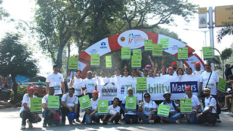

Mobilizing design to strengthen communities


Under the Kadri Foundation, a non-profit trust, we run the Rah-e-Khair Girls High School in Ahmedabad. Initially the school was located in a few spare rooms of the Kadri family home “Diwan’s Bungalow”.
The Kadri Foundation then bought a 100-year-old building in the vicinity and remodeled it. It is now a school with all the facilities necessary for the delivery of a modern day education. Today the school proudly educates 1300 girls from kindergarten to high school.
Save the Children India, a Mumbai based NGO, was founded by the late Mrs Vipula Kadri in 1988. We are proud to have received the Best NGO Award by the Resource Alliance and backed by the Rockfeller Foundation in 2011.
The Save the Children India Head Office & Special Care Centre School in Mumbai is just another example of our commitment to responsible architecture as it sensitively caters to the needs of the hearing impaired and mentally challenged.

A rural initiative, our work with the PRIDE India NGO includes SPARSH Hospital , a 30-bedded facility in the earthquake-prone Latur and Osmanabad Districts of Maharashtra in addition to the PRIDE India Training & Resource Centre at Mahad aimed at empowering the local community.


-

-

- 
-

-

Through a career of over five decades, Mr. I.M.Kadri has been committed to the causes of social upliftment and justice. As a member of the Steering Committee on Slums, Mr. Kadri drafted a definitive report offering solutions.
As General Secretary of Nehru Centre, he initiated several programmes for resolving communal conflicts in various parts of India, rehabilitation of riot victims, provision of facilities for education of deprived children and weaker sections of society. At Nehru Centre he created special art galleries to promote young painters and their work and brought in innovations in cultural offerings at the Nehru Auditorium.
Mr. Rahul Kadri has been actively involved in proposals for generating new public space for the city. As a member of the NSRCF (Nepean Sea Road Citizens Forum) he has undertaken an urban street revamp project for the redevelopment of Nepean Sea Road.
He is also a member of the B.M.C School Infrastructure Committee that is instrumental in setting up processes and monitoring the upgradation of municipal schools in Mumbai.